Table of Contents
- What you'll need
- Demo architecture
- The embeNET demo package
- Programming the boards without building the firmware
- Programming the board from the CubeIDE source code project
- Logging tool
- Starting the Network
- Virtual network interface
- Visualizing the network
- Network services
- MQTT-SN demo service
- Custom UDP service in the demo application
- Next steps
This document describes how to run the embeNET demo application on NUCLEO-WL55JC boards.
What you'll need
- PC with Windows
- One Nucleo-WL55JC board connected to the PC (via USB cable) that will act as the root of the network
- At least one more (up to 9) Nucleo-WL55JC boards that will act as the network nodes
- embeNET demo package for Nucleo-WL55JC
- STM32CubeIDE, available for download from the official ST site (for this demo version 1.17.0 was used)
- (optional)STM32CubeProgrammer available for download from the official ST site
- (optional)Any serial port terminal, for example ExtraPutty, to view the logs
Optionally, to play with the MQTT-SN demo service you'll need:
- MQTT For Small Things (SN) written in Java, available for download from github
- MQTT Client Toolbox, available for download from the official MQTTX page
Optionally, to easily interact with the custom UDP service you'll need
Demo architecture
Picture below presents the architecture of the embeNET network presented in this demo.
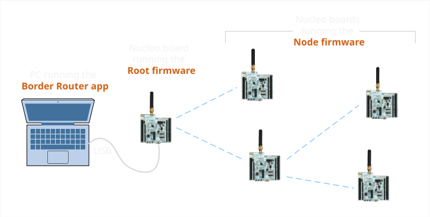
The PC acts as a Border Router and becomes the gateway to the network. One Nucleo board runnig the Root firmware is connected to the PC via USB cable and acts as a network interface. The other Nucleo boards are running the Node firmware. When running the Border Router application, it connects to the root using serial connection (COM in Windows) and a new network interface is registered in the system. All other Nucleo boards then join the network as nodes. Since embeNET is a true mesh network, every node in the network is a router and can extend the network through successive hops.
The embeNET demo package
The embeNET demo package for Nucleo-WL55JC is distributed as a single ZIP file. Unzip it into a convenient location on disk. Inside you'll find a couple of folders:
- doc - contains this documentation
- embenet_br - contains the Border Router application to run on the PC
- embenet_demo_src - contains the firmware project in STM32CubeIDE for the Nucleo-WL55JC boards
- embenet_demo_hex - contains the already built firmware files for the Nucleo-WL55JC boards (Intel HEX format), that you can use without building them yourself
- enms_visualizer - contains a PC demo application that visualizes the network
Programming the boards without building the firmware
A pre-build firware hex files are available inside the embenet_demo_hex folder. You can upload them to the boards using a tool of your choice. We recommend the STM32CubeProgrammer. Here are the steps needed to get started.
Download and install the STM32CubeProgrammer
Run the STM32CubeProgrammer tool and connect the Nucleo-WL55JC board to your PC. Next hit the "Connect" button.
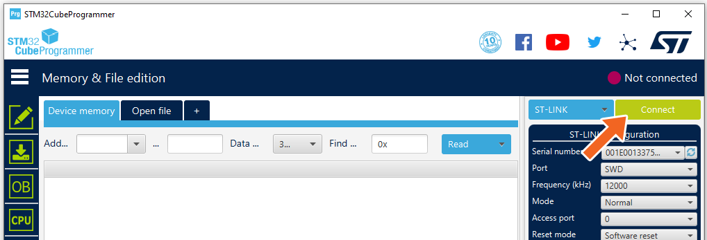
You should see a log similar to this and a status that connection was successful.
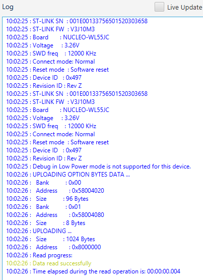
Next hit the "Open file" button and select the firmware file you want to upload.
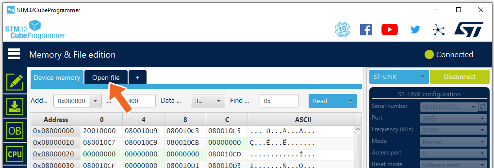
Go to the embenet_demo_hex folder and select:
- embenet_root_demo.hex for the board acting as root node (Root firmware)
- embenet_node_demo.hex for all the other boards (Node firmware)
Finally hit the "Download" button to program the board.
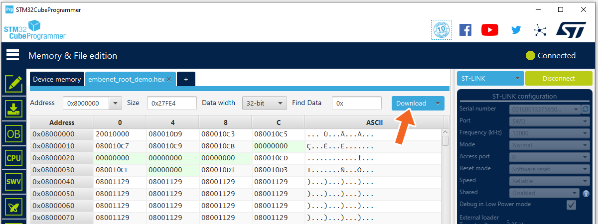
A "File download complete" message should confirm that the firmware was properly downloaded.
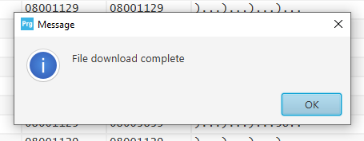
Please note that by default the code will not run until you reset the board.
Now you should have one Nucleo board running Root firmware and at least one or more Nucleo boards running the Node firmware.
Programming the board from the CubeIDE source code project
Download and install the STM32CubeIDE.
Once you have it installed, open it and import the project located in embenet_demo_src folder.
You should see and navigate a project called "embenet_node_demo".
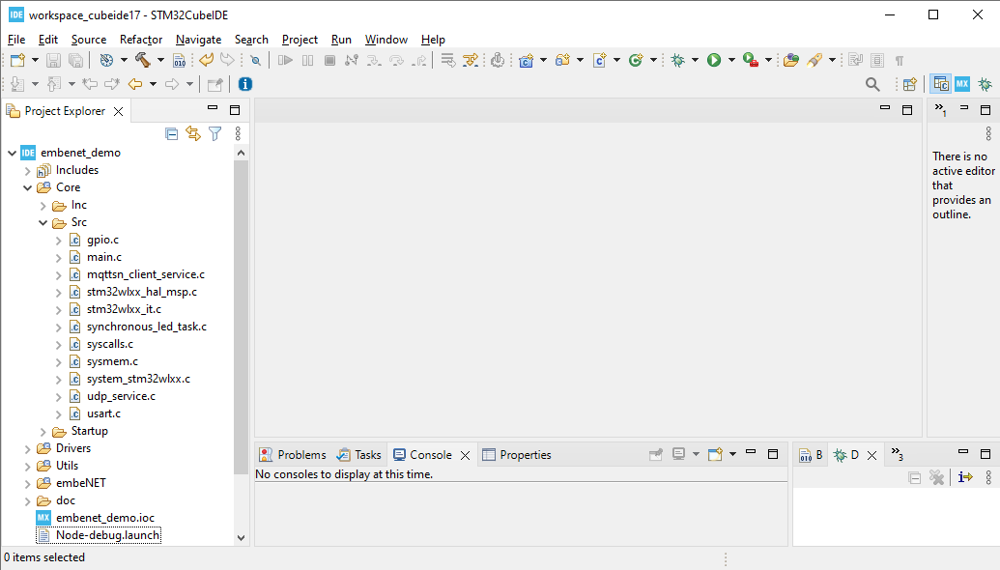
Within the project there will be following folders:
- Core contains the application level files, including main.c
- Drivers contains CMSIS and STM32 HAL driver files
- embeNET contains the embeNET Node library package including port and two services: ENMS and MQTT-SN (more on that later)
- Utils contains some utilities like CRC calculations, logger and ring buffer
The project has four build configurations:
- Node-debug builds the firmware for the node with more detailed logging
- Node-release builds the firmware for the node with less detailed logging
- Root-debug builds the firmware for the root with more detailed logging
- Root-release builds the firmware for the root with less detailed logging
You can switch between the build configurations using the "Build Configurations" project option.
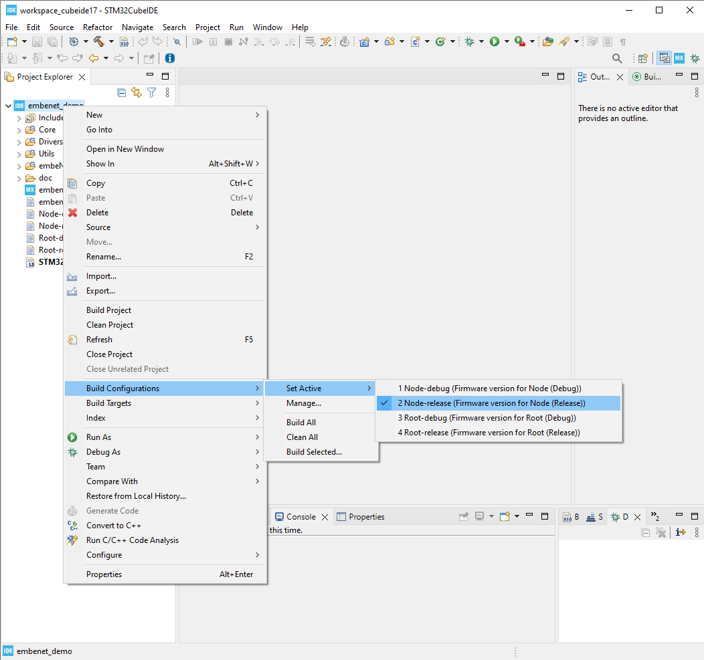
Building and deploying embeNET demo application on node
Right click on the project name and select "Build Configurations" -> "Set Active" -> "Node-release". Build the demo application using the Build project option.
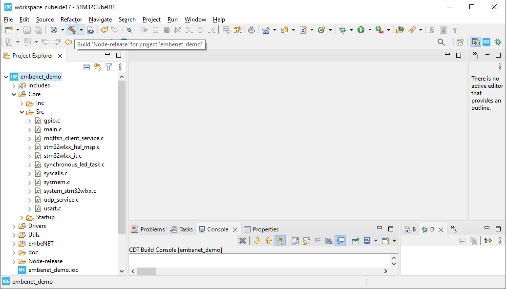
The application should build without errors. Connect the Nucleo board that should act as a node. From the Run menu select the Node-release configuration to program the board. If the configuration is not visible, mark it as favorite in the Organize favorites... menu
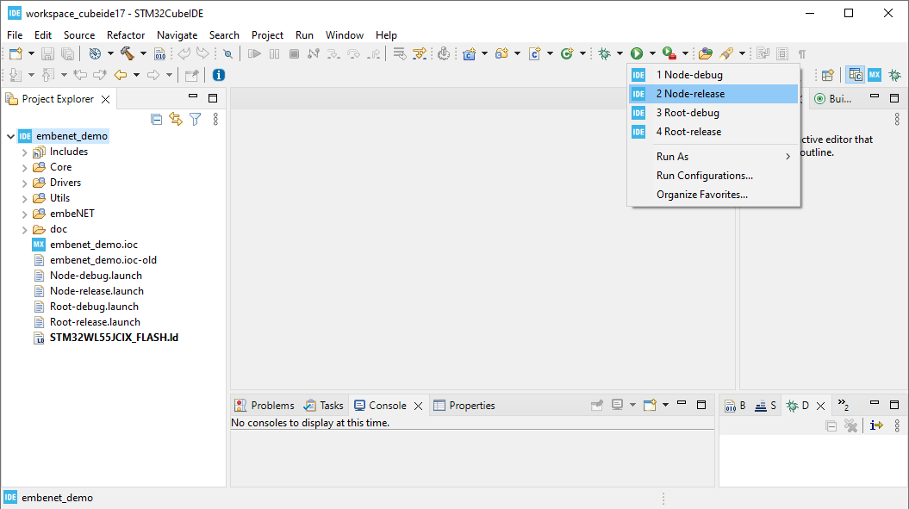
Building and deploying embeNET demo application on root
Right click on the project name and select "Build Configurations" -> "Set Active" -> "Root-release". Build the demo application using the Build project option.
The application should build without errors. Connect the Nucleo board that should act as a root. From the Run menu select the Root-release configuration to program the board. If the configuration is not visible, mark it as favorite in the Organize favorites... menu
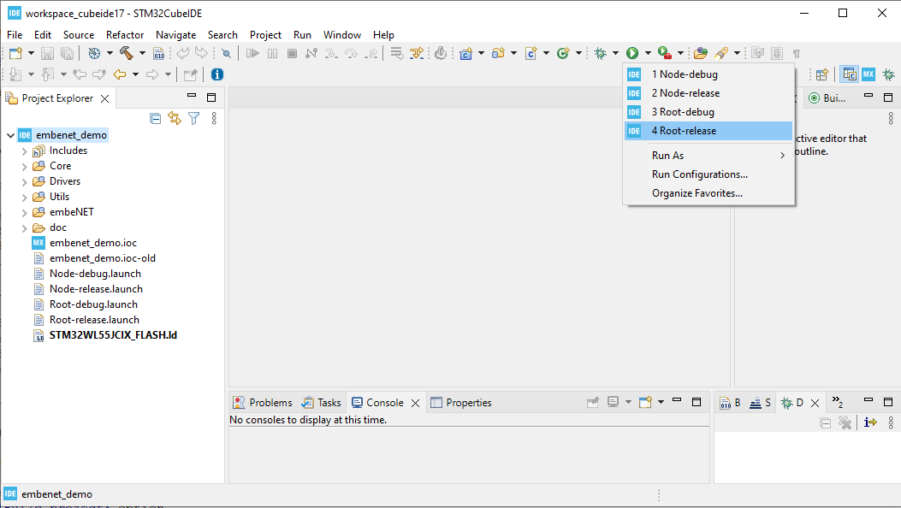
Logging tool
The Nucleo boards have an on-board ST-LINK programmer. Once connected to your computer the board will register in the system with its own ST-LINK Virtual COM Port (VCP).
To obtain log from the Node device you need to use a serial terminal (like Putty), and open connection to the COM port, that the device uses with 115200 baurate.
Note that log from Root is not available through the Virtual COM Port because it is used to communicate with the Border Router application. Therefore log from Root is available on an additional pin (CN10: pin 35) as shown in the picture below :
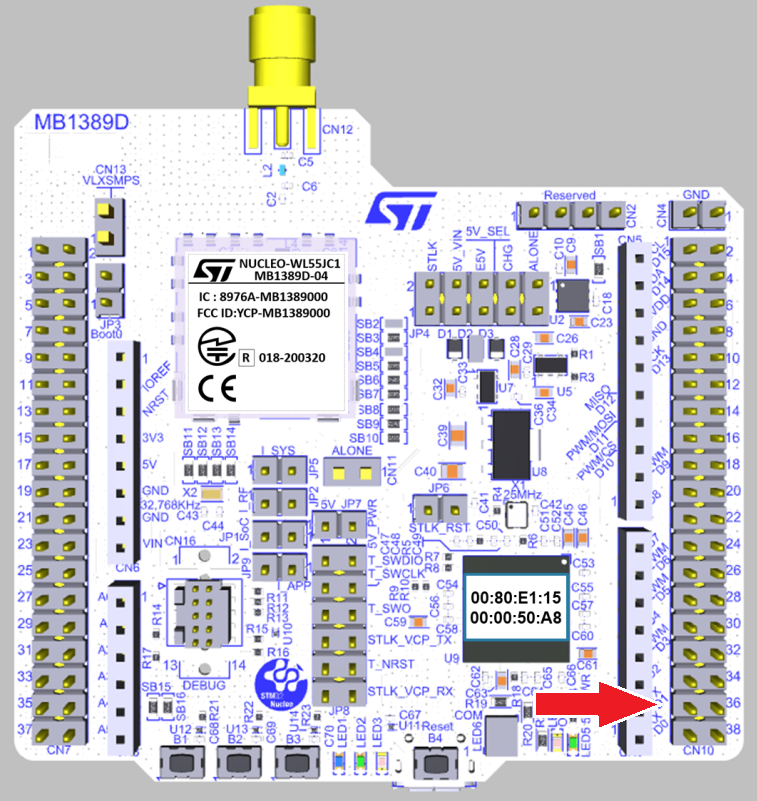
Most of the time however this log is not needed, even during application development.
Starting the Network
Once you have the boards programmed you can see the demo in action.
To start the network you need to connect the root Nucleo board to the PC. It should register as a COM port. Next go to the embenet_br folder and edit the config.json file that holds the border router configuration. The file will look similar to this:
The file has the following entries:
- serial_port - defines COM interface for the root node, in COMxx format.
- interface_name - defines the name of the network interface that will be created within the OS to communicate with the networked nodes
- panid - it is the 16-bit network identifier - it should be unique for each root
- k1 is a 128-bit, network-wide key used to authenticate information exchange in the network. This key can be specific to the network or even whole organization.
- prefix - 64-bit IPv6 prefix of the wireless network
- join_rules - set of join rules that define which nodes can join the network (see below)
Please edit the file to make sure that the serial_port entry matches the COM port registered for the root board.
IPv6 address of the nodes
Each node in the network, including root has an IPv6 address consisting of two parts:
prefix:uid
where the prefix is set for the network in the config.json file and the uid is the 64-bit IEEE EUI-64 identifier, also know as the MAC address. In case of Nucleo-WL55JC boards it is printed on the ST-Link chip in the bottom-left part of the board, near the micro-USB socket.
Join rules
Each node that wishes to join the embeNET network needs to be authorized by the built-in Authentication Authority. The authentication process uses a pre-shared key (psk), that needs to be configured in the nodes during commissioning. In the provided demo application firmware the key is hardcoded in main.c file. During the authentication process both the uid and psk have to match what is defined in the join_rules in order to let the node join the network. However, when uid is set to 0, EVERY node with matching psk (pre-shared key) will be able to join the network. We call it the "zero rule". It is useful for testing and experimenting, however it should probably be disabled in the real deployment.
Running the border router application
The network is started once you run the border router application embenet_br.exe. The application will try to connect to the root node and then manage the network.
This is a console application that will also log a lot of information about what is going on in the network and what packets are received from the nodes. Analyzing this log may help dealing with problems, if they arise during the further development process.
Connecting the nodes
Once the border router application is running, all nodes within the communication range, should start to join the network. Be aware that this process may take couple of minutes depending on the network topology and the state of the nodes. For example: nodes that previously joined the network may require some time to notice that the border router was restarted before they attempt to join again.
Virtual network interface
While running, the border router application registers a virtual network interface within Windows. The interface name will be set according to the config.json file. You can check the presence of this interface by running the standard Windows command:
ipconfig
Also, each connected node is reachable by ICMPv6 'ping'.
Visualizing the network
The demo package includes an application that visualizes the network. It is called enms_visualizer and it is based on the ENMS service running in the background of the network. To use it simply run the application while the network is running. After a minute or so the ENMS messages will feed the application with the current state of the network, that will be visualized as a graph, spanning from the root node.
Exemplary topology with two nodes may look like this:
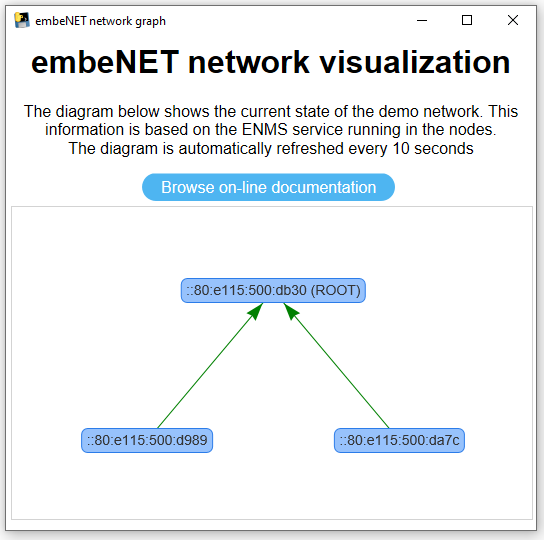
Network services
A network service in embeNET, is a separated piece of functionality built around the communication over a single UDP port (rarely - multiple UDP ports). Three examples of services distributed with the embeNET stack are:
- ENMS: embeNET Network Management service that allows to gather information about the network operation from the nodes
- MQTT-SN client service that allows to use the popular MQTT publish/subscribe architecture in UDP networks and connect to standard MQTT brokers
- BOTA: Bulk-Over-The-Air service that allows to send large portions of data (for example - new firmware) between the nodes. Note that BOTA service is not available in this demo
The users however can easily develop their own services using UDP. An example of such a custom UDP service is implemented in the demo nodes.
MQTT-SN demo service
The MQTT-SN demo service uses MQTT-SN client and does three things:
- periodically publishes uptime information using QoS 0
- on button press publishes button click event using QoS 2
- reacts to some simple text commands that control the on-boards LEDs - these commands are: led1on, led1off, led2on, led2off, led3on and led3off
Refer to Using MQTT-SN demo service for more information on how this service works and how to use it.
Custom UDP service in the demo application
The custom service implemented in the demo works on UDP port number 1234. Please note that this service works on remote nodes only - it is not available in root node. The service does two things:
- periodically sends a simple text message with counter to the border router node
- reacts to some simple text commands that control the on-boards LEDs - these commands are: led1on, led1off, led2on, led2off, led3on and led3off
There are many ways you can interact with UDP ports to test this service. One of the easiest is to use an application called UDP - Sender/Reciever app from Microsoft Store. Once you run set the mode to Sender/Receiver. Next, in the Remote IP box input the IPv6 address of the remote node that you wish to communicate with. When using the default network prefix, this IP address will have the following form:
where the UID will be the MAC address of the node.
In the Remote Port and Local Port boxes put port number: 1234
Once you hit Connect you should see incoming text messages. You can also send some commands to light the LEDs on and off.
Next steps
In order to get to know the internals of the demo and to modify or extend it refer to Internals of the embeNET demo for NUCLEO-WL55JC board.
In order to test MQTT-SN part of the demo go to Using MQTT-SN demo service.
Generated on Mon Dec 23 2024 17:52:52 for Getting started with embeNET demo for NUCLEO-WL55JC board by